install.packages("usethis")Version Control with Git


For screen-shot slides, click here
For the YouTube narration, click here
Background
Now that we have created a GitHub account, installed the required software and investigated Positron’s layout, we will start learning about version control software.
When working with code, it is important to stay organized. Ideally, everything needed for your code to successfully run should be present and accounted for within the local environment. Likewise, if you make changes, and your code stops working (no longer returning the expected output, ie. breaks), it would be most useful to have a track record of what has changed since your last working version in order to fix the issue. For beginners, this is often a typo in a function name or a misplaced comma somewhere within your document.
For this course, we will be using the version control software Git. It is widely used by software developers and bioinformaticians worldwide, and is a very useful tool to have in your coding toolbox.
Git works locally within your individual project folders to track changes to the documents within, allowing to save the current state of the folder along the way (ie. a commit). This allows you to compare to previous versions (other commits) and return the changes that have occured to the tracked files.
As we saw during the workstation setup section, when you have a linked GitHub account, you can backup folders as repositories online. By leveraging the ability to send and receive changes, this allows you to modify a file on one computer,
Individual repositories can be linked to a GitHub account, which permits them to be backed up online. Within our workflow, this allows to modify on one computer, back up (ie. push) the changes to GitHub, and then later on a different workstation, retrieve (ie. pull) these new changes and continue working.
In this walk-through, we will set up a New Project Folder from a template, create a few folders and files, and work through how to use the main set of Git commands needed for this course.
Getting Started
For this walkthrough, we are going to create a brand new project folder. To do this, we can open the folder tab on the upper right.
From here we can see we have two options, create a “New Folder from a Template”, and create a “New Folder from Git” (which was the option we used during workstation setup to bring in the forked CytometryInR and README repository folders locally).
We will go ahead and select “New Folder from a Template” for this example.
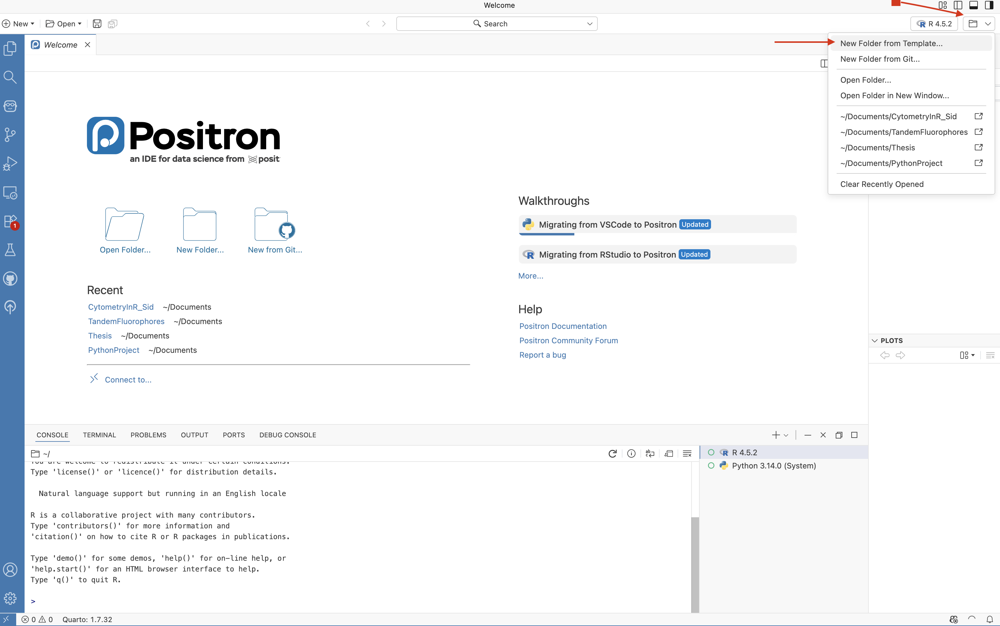
New Folder from Template
Since Positron can use multiple programming languages, when we select “New Folder from Template” we will be asked what kind of folder template we want to use. Since we are working in R, we will select the “R Project” option.

We will next be asked to name the new project folder and a storage location.
One thing I would like to remind everyone who is just starting to code is that it is best to avoid using special characters (ex. @ $ # ^ ! ; : ,) in any folder or file name. This is because when coding, these can be misinterpreted as commands.
While spaces are generally okay, it is often to best stick to to stick to hyphens (-), underscores (_). We will explore naming conventions in more depth at a later time.

Another useful thing to know when getting started with version control, it is best to save your files within your local computer, avoid using OneDrive or other cloud storage options for the time reason. The reason behind is that permissions to write/save to the cloud locations can sometimes be quite finicky, and some autosave/indexing behaviors can cause issues. akes things easier to save or modify without running into permission issues. For most of our course examples, we will be saving our Project Folders under the Documents Folder.
Having named our new Project Folder, and designated a storage location, go ahead and check the Initialize Git Repository option. This will indicate to version control to monitor content and changes to files within this folder.

The next setup screen will verify which version of R you wish to use. Since we are just getting started, your most recent version of R (usually system) should work. We will also leave the “renv” (reproducible environment setup) option unchecked for the time being (we will revisit the concept later in the course).

And if all goes well, we should see the “New Folder Created” popup.
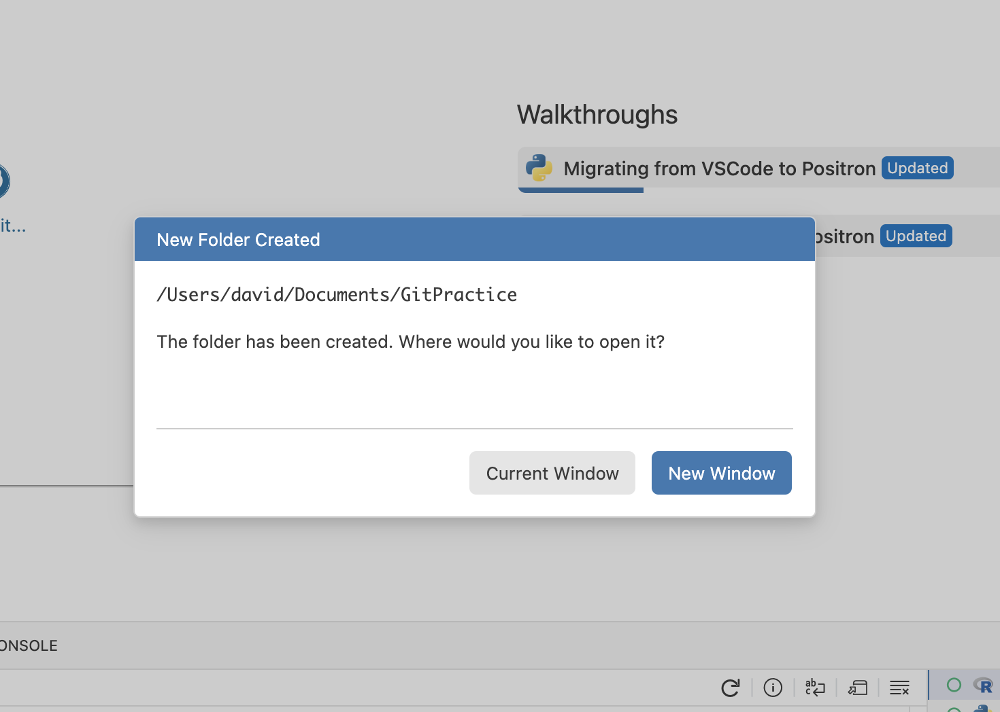
Creating SubFolders
Once your new project folder has opened, you should be seeing the main layout elements that we briefly covered in the Positron walk-through.
For this section, we will primarily be focused on what is happening within the primary side bar on the left, where changes to the individual files within the folder since the last save/commit will be reflected by colored text.
For my own projects, there are some elements of organization that I go ahead and add for each new folder. These include both a data and an images subfolders to help keep things a little more organized.
To create these folders, we would click on the respective add folder (+) button on the side bar. Files and Folders can be clicked and dragged within the primary side bar to move things to new folder locations.
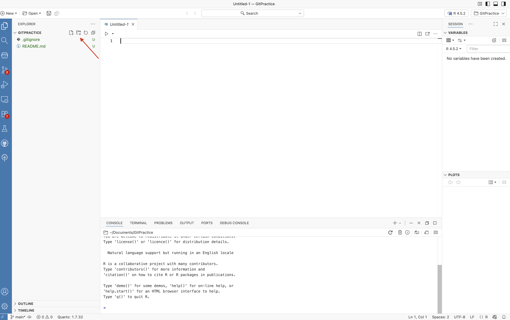
Creating Files
In context of this course, we will primarily be working with two types of files when coding:
R Scripts: These files end in .R. These contain only code (with occasional # comment line). These are often used for self-contained code that once we get them working we rarely need to modify.
Quarto Markdowns: These files end in .qmd. They contain a .yaml header, followed by a mix of regular written text (often explanations or other documentation), and sections (ie. chunks) that contain code. These are used when we are still getting the code to work, when we need to modify inputs frequently, or simply when we need to document what and why we are doing something to make life easier for our future-self two months from now.
In this example, I will go ahead and select the new file icon

Thenn I will name the file, and designate it as a Quarto Markdown file by adding the .qmd at the end of the name to denote the file type.

QMD Files
Once this is done, we can now see we have a new .qmd file (“Example.qmd” in this case).
YAML
As previously mentioned, the start of a Quarto Markdown file containg a YAML code chunk that is used to set formatting choices (we will explore this in-depth during the next section)
What designates the location of the YAML block are three hyphens at the start, and three hyphens at the end. For this example, we will also provide a “title:” and “format:” field for the time being (see additional options here).
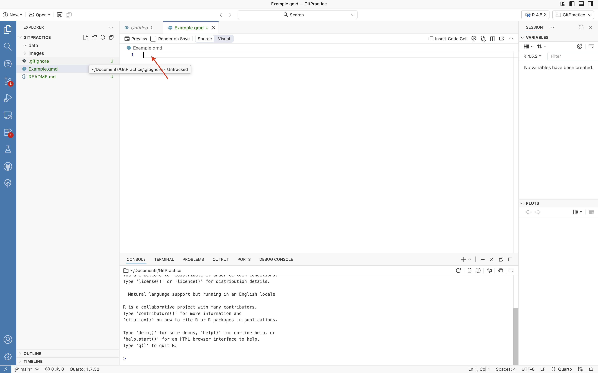
Text
With a basic YAML formatting block now in place, we can build out other elements of our Quarto Markdown document. Unless otherwise specified, everything else in the document is assumed to be text, so I will go ahead and provide an initial text description of what I am trying to do.

Code-Chunks
Having provided some initial text for documentation, we can then add code-block chunks to start writing some code.
The easiest way to do do this is to click the respective option on the upper-right of the Editor screen. Since Positron can handle multiple programming languages, so the chunk is inserted, we will need to select the language we use to be used within the code chunk (R in this case).

You will notice, that the inserted code block starts off with three backticks (`) and then “{r}”. The end of the code block is denoted by an additional three backticks.
We can also add new code blocks by simply typing these elements into the location we want to place a code chunk (as long as we are careful to add 3 backticks also at the end).
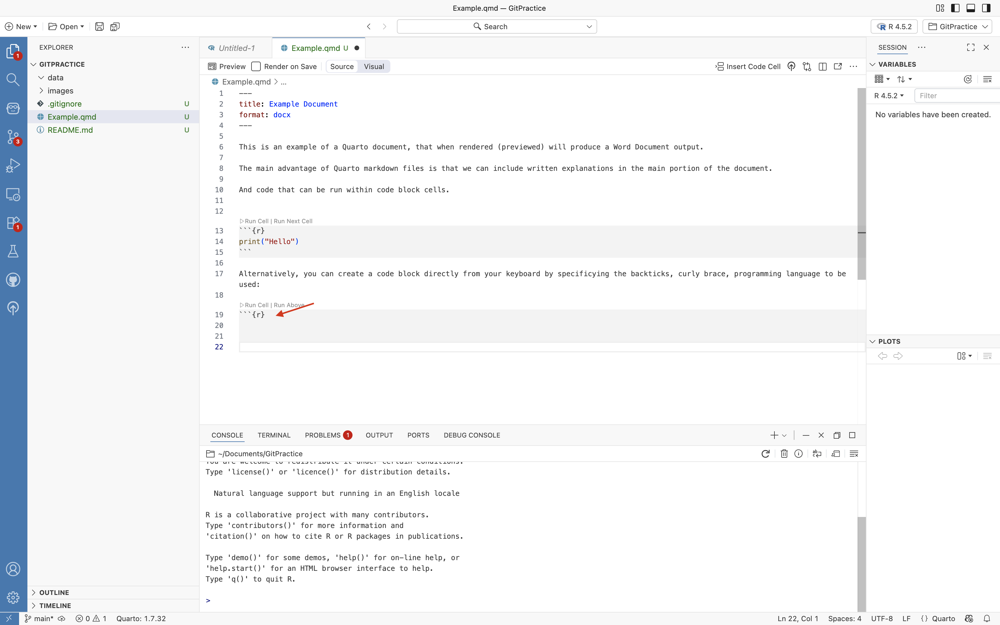
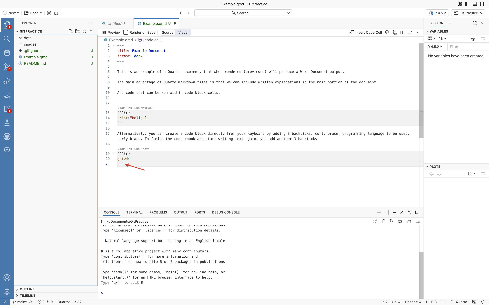
Running Code
Now that we have two code-chunks written, we can write lines of code within them. For this example, I will use two beginner friendly functions, print(“Hello”), which will print the contents contained between the ” ” to the console, and getwd() which will return the location of the folder you are working within (ie. the working directory).
To run/execute these lines of code, we have a couple options. We can click on the Run Cell option that appears on the upper-left side of the code chunk. Additionally, it has a companion option that will run all code chunks above it.

When a code block is successfully run, you will see within the console (lower bottom of the screen) the line of code be run, with any returned outputs appear directly after.
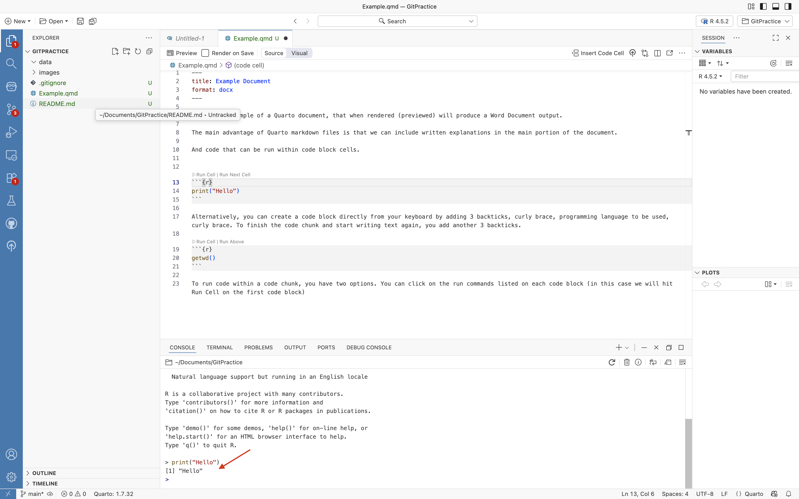
An alternative to clicking the Run Cell button is to click on the line of code you are interested in running, then press (Ctrl + Enter)/(Command + Enter). This will execute the line of code that you have clicked on. This can be useful in scenarios where you want to run a specific line, and not the entire code-chunk.

Using this approach, you can see the location (ie. file path) of the current working directory was returned to the Console.
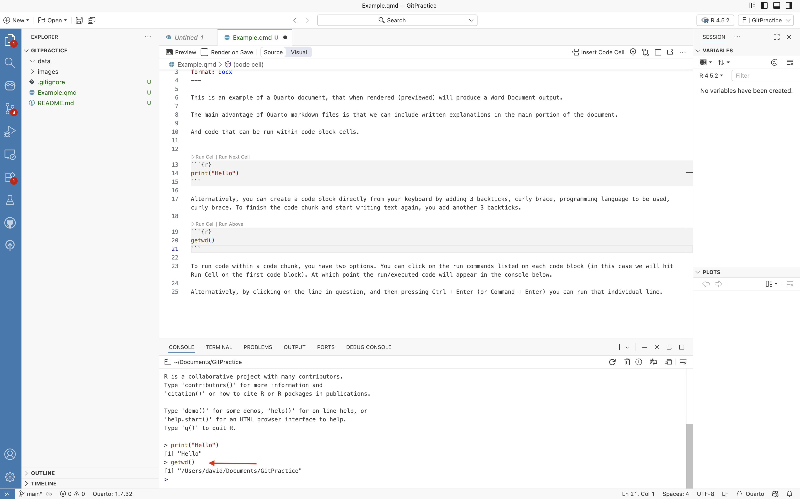
Local Version Control
Having introduced the main elements of a Quarto Markdown file, let’s turn our attention to the tab within the editor showing our newly created .qmd file.
We can see there is a solid circle next to the file name, and it is appearing as green. The circle denotes unsaved changes, which we can correct by clicking on the Save Button to save the changes to our file.

Untracked
If we turn our attention to the left primary sidebar, we can see that within our GitPractie folder there are three files, our Example.qmd, and the default README.md and .gitignore files. These all show up in green text with U’s to the right of the file names.
This denotes that the version control tracking software Git is currently considering them as “Untracked” files. While saving the document via the Save button means we will still have our changes when we reopen Positron, we won’t have any history of changes that we can use to revert back to the way all the files appeared at this exact point in time should something go wrong.
We will next go the address bar on the very far left, and select the Git tab.
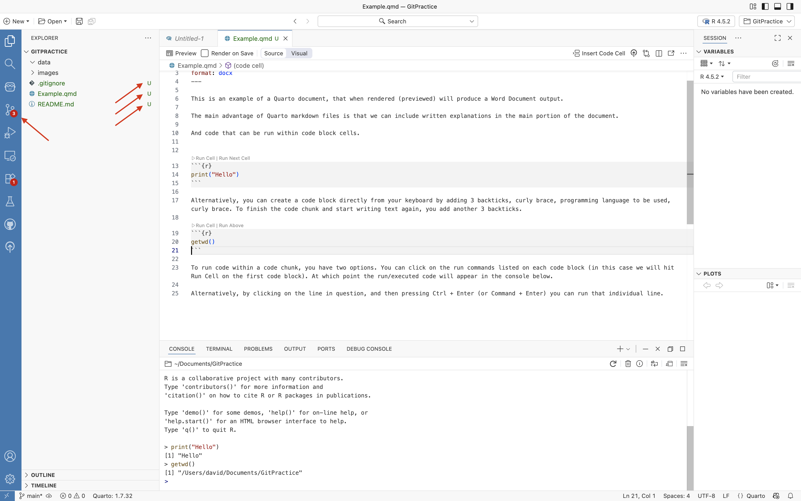
On the Git tab, we can see that each of the three files are shown underneath a “Changes” drop-down. This contains the files that have undergone changes since the last commit. In our case, since we haven’t updated the save-state yet, this last commit would be the initial creation of the project folder.

To have version control track these individual files going forward, we can do so in two separate ways. We can add them individually by clicking the + symbol next to the individual names.

Staged
This will result in the files being moved to the “Staged” dropdown. This denotes files being tracked with the intention of being recorded as the next save-state or waypoint (ie. a commit).
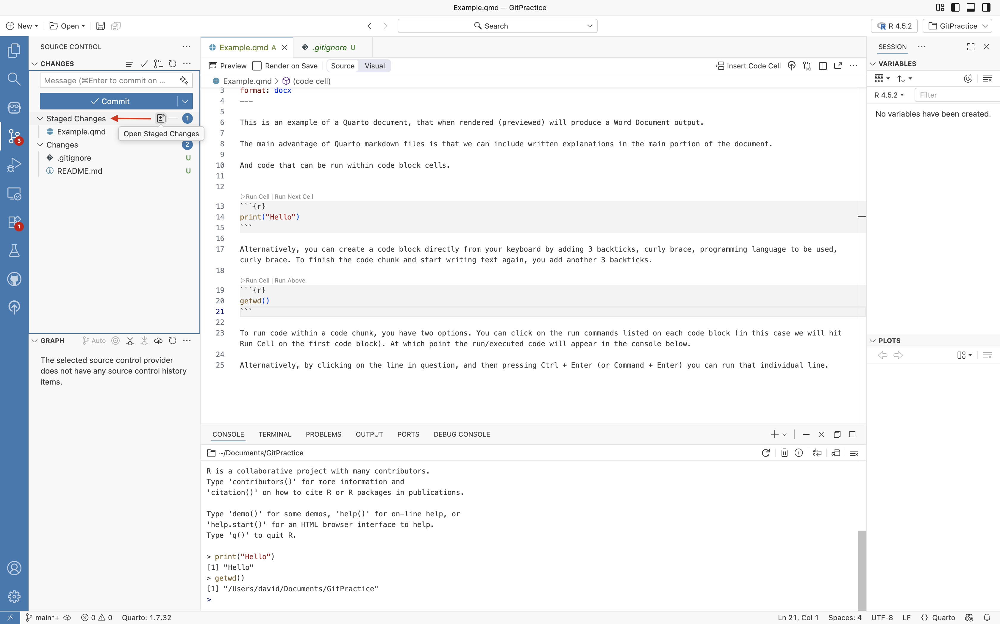
Commit
To create a new commit (save-state or waypoint), once we have the files we want to track staged, we will write a commit message, and then press commit.
A commit message is a brief description of the changes that have occurred to the files between this commit and the previous one. Make this short description informative enough that if you need to revert back in the future, you can quickly identify the commit you need to fall back to (more about this later).
If this your first time using version control, you will likely encounter the following pop-up asking that you provide a user.name and user.email. This is used to designate the author of the changes.If you get this popup, go ahead and select “Open Git Log”

UserName and UserEmail
The Output tab at the bottom of the screen will open, showing the messages that led to the popup.
The important part to note is the commands that will be needed to provide your user name and email to the computer for authoring the commit. Typically, your email will be the same one you used for your GitHub account.
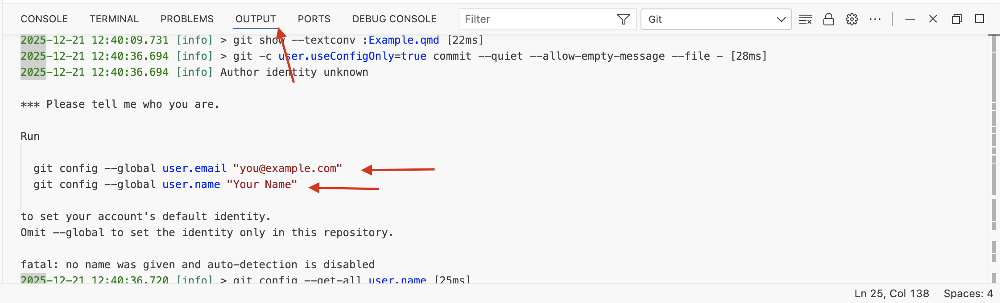
From the displayed message, go ahead and copy
“git config –global user.email”you@example.com””
Then click on the adjacent terminal tab. You will paste the command in, but do not hit enter just yet.
Windows users, please note, depending on your settings, if trying to paste from the keyboard into the terminal, you may need to press “Ctrl + Shift + V” instead of the usual “Ctrl + V”.

With the command now pasted (or typed), use your keyboard arrows to navigate to the email portion, and replace the generic email with your email address used for your GitHub account.
Make sure that the quotation marks (“) around the email address remain present, as they help the computer identify where your email address starts and ends. Once satisfied that your email address is correct, press enter.

Next up, repeat the process, this time copying over the command needed to set your user name to the terminal. Repeat the editing process to provide your name between the “” marks. Then press enter.


First Commit
Now that your user.name and email address have been provided, Git should be able to provide an author to the commit message. Reattempt to press commit button.
If this is successful, you will see your initial commit appear on the bottom half of the left primary side bar, under the Graph dropdown. Congrats! Your files are now being tracked by version control.
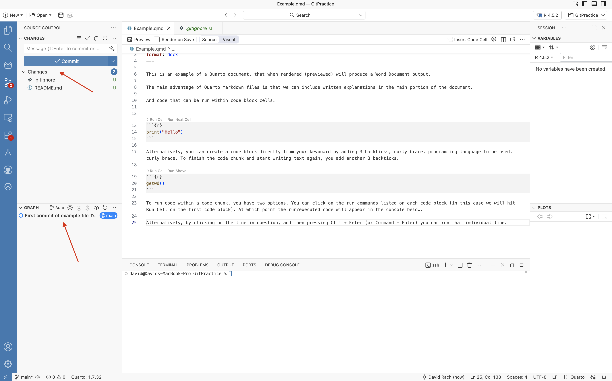
If you hover with your mouse arrow just over the commit, you can see the longer commit message and additional details appear.
If you click on the commit tab, a new display will open in the editor, displaying the changes that occured in that commit compared to the previous one. In this case, since we added everything since the previous commit, nothing appears on the left side, while the entire documents contents appear highlighted in green on the right.
Green highlighting is used to show additions, while red highlighting is used to show deletions.

Having completed this initial commit, for this example, let’s imitate a typical workflow and make some additional changes to the file before we make a second commit. Within text portions of the .qmd file, use of # denotes a section header in markdown, so let’s add a header for Introduction and click save.

Modified
Within the left primary sidebar, we can see that the Git tracking has updated. Examples.qmd is visible once again. However, becuase it is now a tracked file, instead of showing up with the “U/Untracked” green highlight, it now appears as a brownish-red with a “M/Modified”.
Let’s make an additional change to the .qmd file by adding another section (# Setup) and a code block with a commented out line (denoted by the # at the line start), before pressing Save.

If we were now to click on the Example.qmd file in the left primary sidebar, it will open the same kind of tracking display we saw previously. This time, we can see changes since our last commit. These appear as the green highlights along the scroll-bar, corresponding to the # Introduction and # Setup headers that we have added in since the last commit.

For a larger document, we can scroll down to see the various highlighted regions.
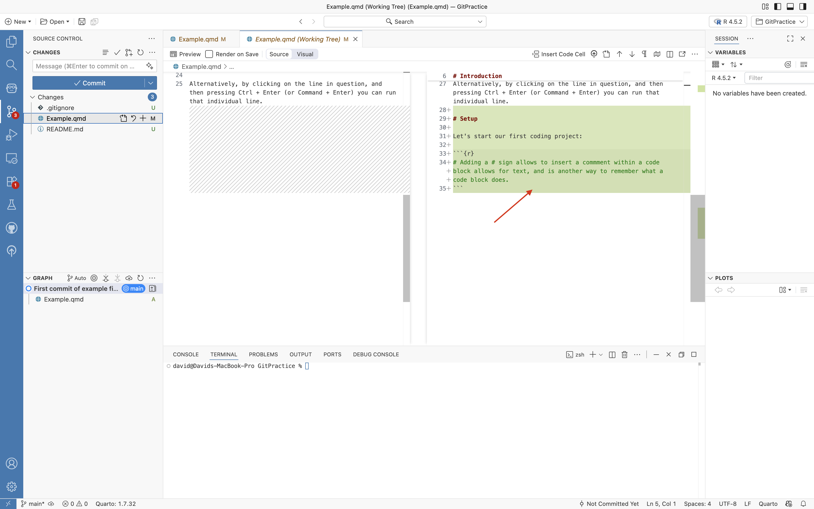
We could now repeat the steps showed above, staging the file, writing a commit message, and commiting again by clicking on the designated buttons.
An important question is how often should we commit, vs. just hit save? Well… it depends :D Let’s think about this in context of a video game. If you made commits at regular intervals throughout the day (or more frequently when doing something particularly risky), you are more likely to be close enough to a particular commit (waypoint/save-state) that you can quickly revert back to without loosing any progress. Alternatively, if your last commit was last week, you will not have any intermediate versions to fall back to.
Commit via Terminal
Having demonstrated how to commit changes to Git via the left primary side-bar, for this second commit, let’s do it the alternate way via the terminal (tab on the panel at the bottom of your screen).

After clicking on the terminal tab, click on blinking command line.
The command to stage a file is “git add”, followed by the name of the file you want to stage.
In this case, you would enter “git add Example.qmd” and press Enter. 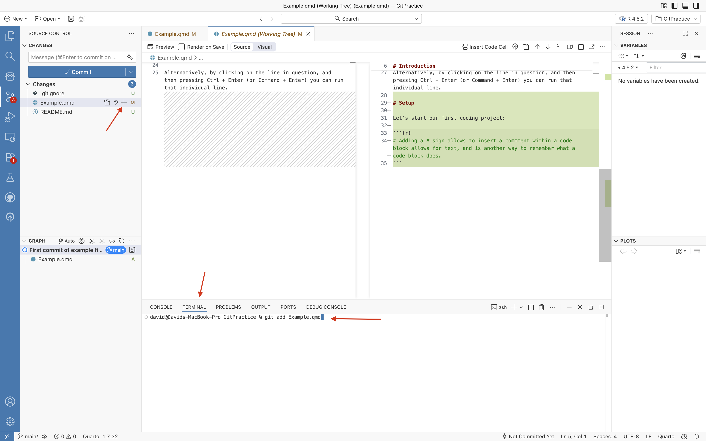
You will see after pressing enter a new blank terminal line appear. If you glance at the left-sidebar, you can see that Example.qmd now appears under the Staged Changes dropdown.
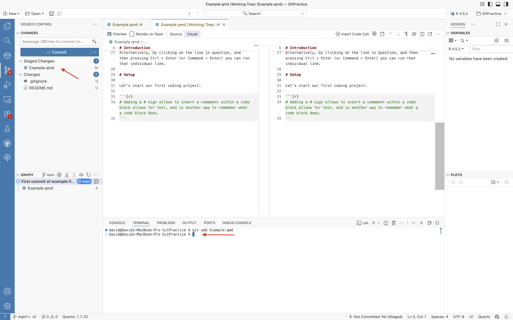
Next up, let’s write the git commit via the terminal. In this case, the command would be “git commit -m” (-m denoting message). The commit text is then surrounded by “” marks.
For example: “git commit -m”Added section headers to my QMD file””
Press enter to save the commit.

And you should see your second commit now appear in the left primary sidebar underneath the graphs dropdown.
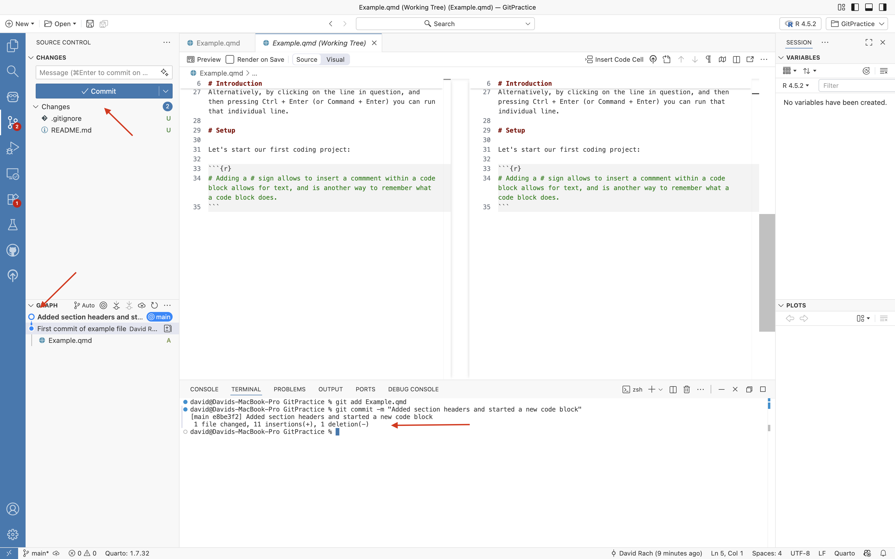
Remote Version Control
Copying Project Folder to GitHub
While having local version control in place is helpful when you need to revert back after encountering issues, where Git shines is the ability to pass your changes to your online GitHub repository.
Not only does this allow you to switch between computers, but should something disastrous happen to your main computer, you still have all your hard work backed up and readily assessible.
For this subsection, first, double check that Positron is still connected to your GitHub account by checking the user tab on the bottom-left. If not, repeat the connection setup.
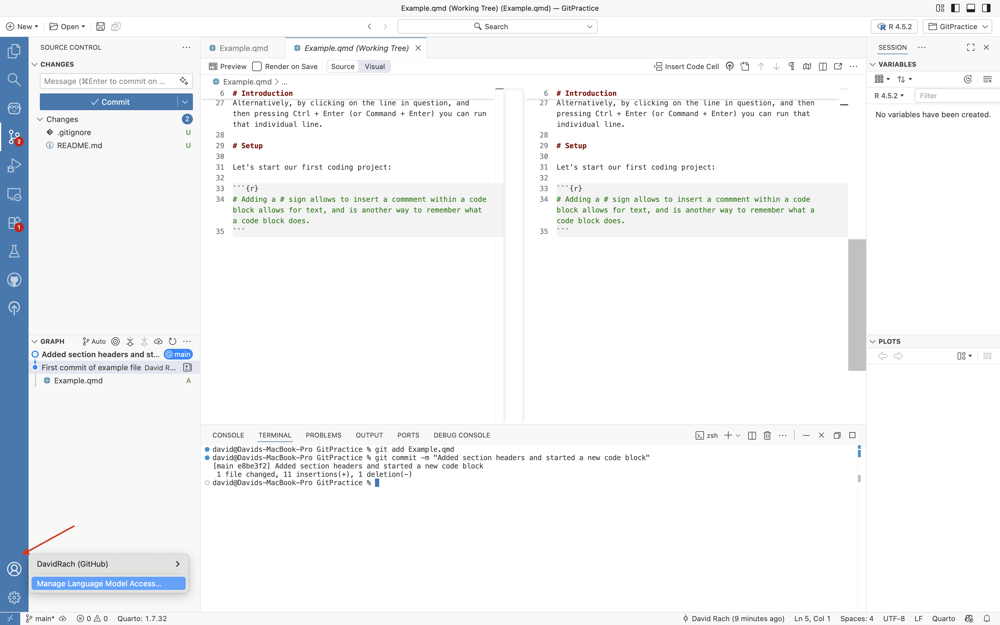
Since our project was created using the “New Folder from Template” option, it currently only exist locally. What we want to do next is to copy it to our GitHub account, creating a new repository in the process.
To do this, we will first need to install the usethis R package. Within your console, you would run the following line of code:
Depending on what R packages you already have installed on your computer, you may get a prompt asking if you want to update/install additional dependencies. Go ahead and type the number corresponding to Update All, and press enter.
The package and all it’s dependencies should then install. If an error message appears, read through it, and follow provided instructions. Go to Discussions if need help.
Once the usethis package is installed, we need to activate it within R by calling it with the library command. This makes all the tools (ie. functions) within an R package available for use within Positron.
In your console, you would type:
library(usethis)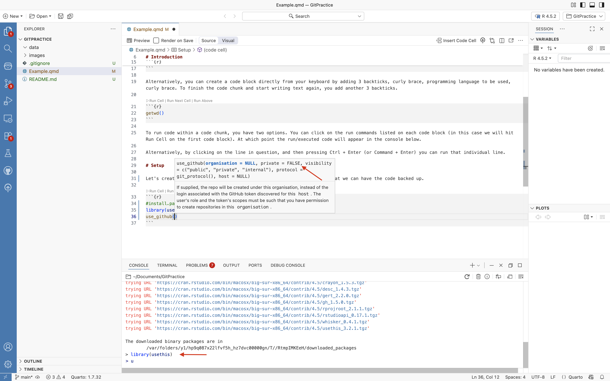
With library called, you now have access to the functions (tools) within the usethis R package. One of these is the use_github() function.
In Positron, if you hover over a function, it will pull up the associated help file which will provide you information about the arguments the function expects to receive, and what they do.
For use_github(), the main thing to remember for now is since this is a personal project being used for testing, we don’t necessarily want to share it with the entire world, so we should set the “private” argument equal to TRUE when creating a new repository.
Taking this information that we have now gathered, we can now within our Quarto Markdown create a code chunk, write out the line of code calling the function, and providing the Private=TRUE argument within the ().
Within a code chunk, adding a # in front of a line of code, will comment it out, resulting in that line of code not being run. Since we have already installed the usethis package, and we don’t want to reinstall it every single time, let’s go ahead and comment out that line. Go ahead and press Enter.
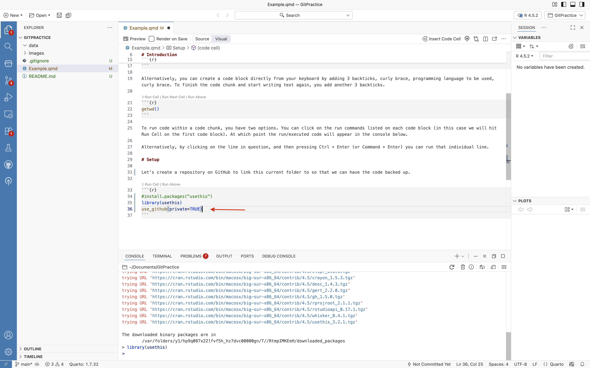
We will see a message pop-up in the console. In this case, we had not saved before pressing enter, so there are uncommitted changes within the folder. The pop-up is asking whether you want to save these as well before sending the Folder to GitHub.
In this case I will chose to ignore the uncommitted changes by entering 3 (for Definitely) in the console and hitting enter on my keyboard.

The usethis R package will then execute the series of git commands that are needed to set up a GitHub repository (ie. the messages being displayed in the console window), and when finished will open a pop-up asking whether you want to see your new repository in your default Web Browser. I will go ahead and select yes in this case.
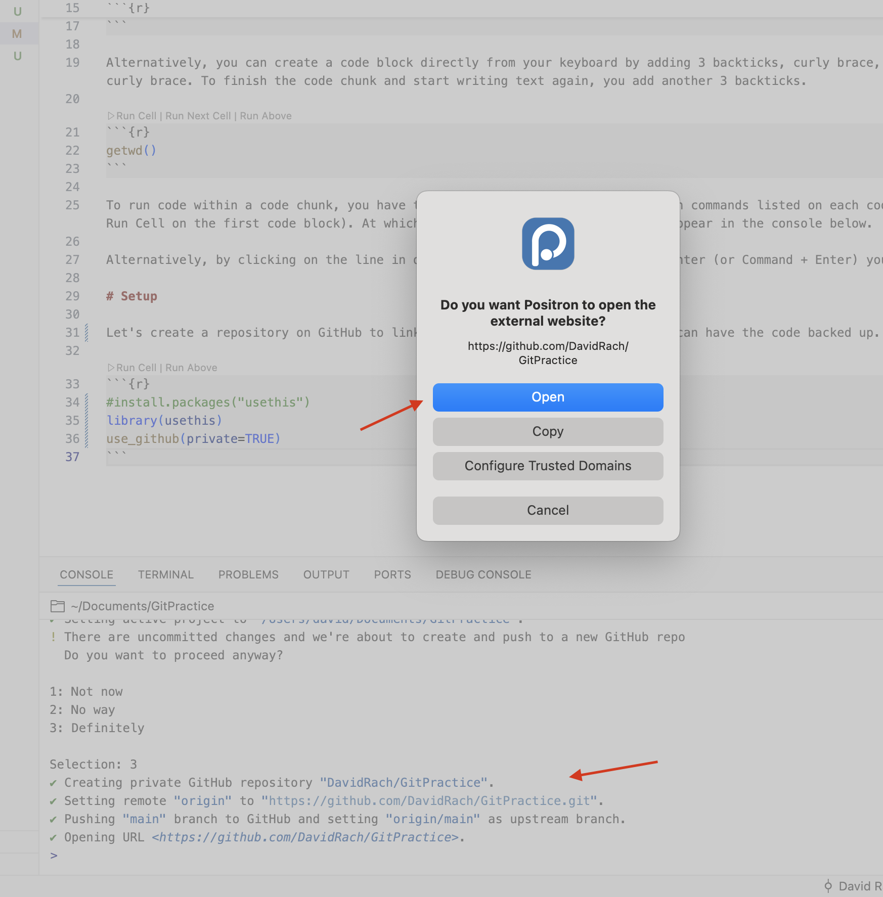
After the browser opens, you can see that the elements I had staged and committed within Positron are now present within the GitHub repository. Since I had only staged Example.qmd, it is the only file that was backed up. We can also see the commit history online by clicking on the commit clock.

As we would expect, we only see our two commit messages. One important thing to note is the commit hash numbers, that denote a particular commit. If we decided to revert/fall back to a prior commit in the future, this would be the number we would need to provide to Git to return to that previous commit/save-state
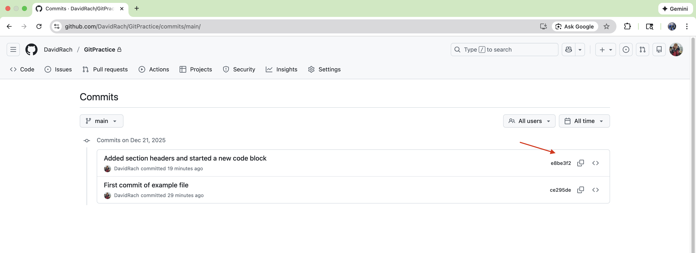
Similarly, on GitHub, we have an option to Browse a Repository at a particular point in time. This will be quite useful later in the future when troubleshooting what major changes occurred between versions of an R package.

Code Chunk Arguments
Having successfully connected our local Project Folder to a remote GitHub repository, let’s return to Positron.
Before continuing, if we left the code chunk that created the GitHub repository as is, every time we ran all code chunks in the document, it would try to recreate the GitHub repository. We don’t want this to happen, as the setup was a one-time operation.
While we could add # in front of every line of code (or delete the code chunk entirely) it is often useful to have these set-up code chunks around to remind us what arguments we need to provide next time we need to a similar setup and are mind blanking on what to do.
Fortunately, Quarto allows us to set conditions on whether a chunk is run (ie. evaluated). We will discuss the conditiona arguments in more depth in the next section, but for now, we can modify the code chunk as follows.
On the next line after the {r}, we will add a hashtag (#), then a pipe (|), followed by a space. This is the setup for a code-chunk specific argument. We will then add “eval: FALSE”, which signals that the particular code-chunk should not be evaluated (ie, should not be run).
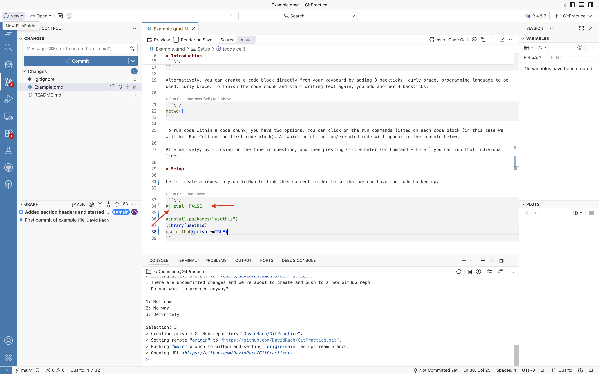
README
Now that we have connected our local Project Folder to GitHub, and have gotten a basic introduction to the “git add”, “git commit” arguments, let’s turn our focus to the other files currently listed as untracked by Git within our folder, the README.md and the .gitignore files.
When setting up our GitHub account, we encounted an example of a README.md file. This file often provides a brief description of the project, and an outline of what the other files in the folder are for. As you may have gathered, even software developers are forgetful/under-caffenaited, and having notes to catch back up to speed is important.

.gitignore
We additionally have a .gitignore file. Within a project, there are often some files that we will never want version control to track. These could be files that are too large for GitHub (ex. really large .fcs files), or files containing sensitive information (passwords, history, credentials, etc.).
When the names of these file (or the file type shothand) are added to the .gitignore file, they are ignored by version control, and no longer appear on the primary left side bar.
Let’s proceed and stage both the README.md and .gitignore file, so that changes to these files will be tracked. We can of course select both from the primary left side bar and write a short commit message.
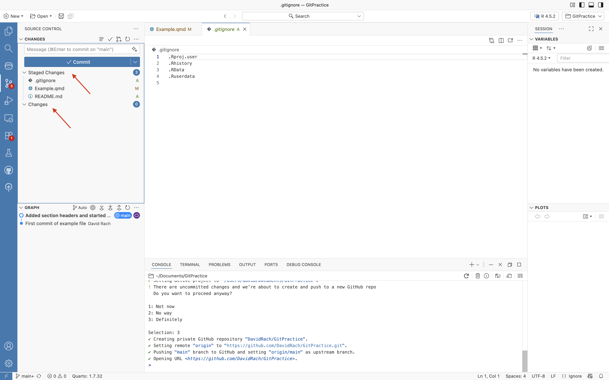
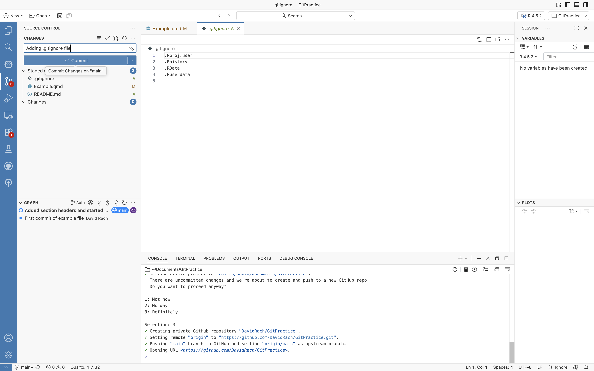
Or alternatively, if we want to stage all uncommitted files present in a single step, we could in the terminal use the “git add .”
We can then write our git commit using “git commit -m”.
Both approaches work, and you may switch between them based on preferrence.

You will notice after having committed, that if you look at the Graph dropdown on the bottom half of the primary left side-bar that something has changed.
There are now separate icons denoted as main and origin/main. These correspond to the last commit present locally (main), and the last commit on remote (ie. GitHub, origin/main).
Local is ahead since you just made the commit with the changes inactivating the code-chunk, and you have not passed these changes up to GitHub yet.

Pull
Before sending (ie. pushing up) our updated commit to GitHub, especially if you are working on a project from multiple computers (or as part of a team) to bring in (ie. pull down) any changes that might be on GitHub that are not present locally.
This ensures that everything is up to date, and you don’t end up with mismatched commits that are incompatible with each other and trigger an error message.
To pull in changes from GitHub, at the top of the primary left side-bar, you can select the … button to open a drop-down menu of Git options. You would then select “Pull”.
Alternatively, you could do the same thing via the terminal by running the “git pull” command.
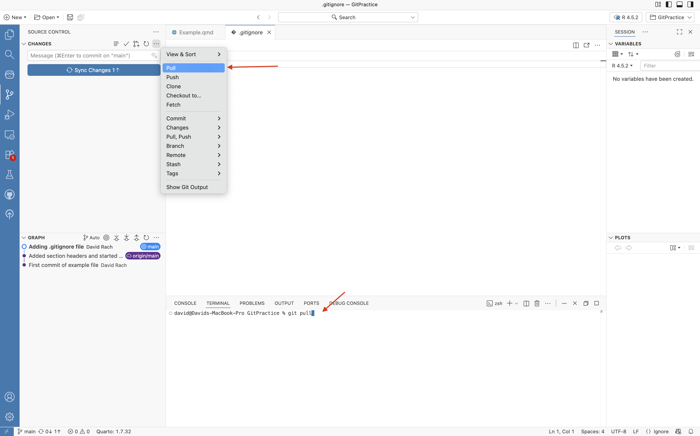
Push
In our case, there was no new material present on our GitHub repository that were not already present locally, so all that is returned is the “Already up to date” message.
We are now good to proceed to push (ie. send) the updated commit up to our GitHub repository.
We can do this by either pressing the Sync changes button, or via the terminal entering the “git push” command.
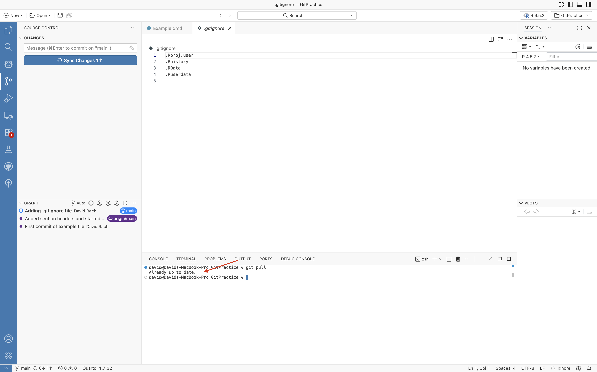
And now, if you glance down at left side-bar’s graph section, you will see that both the main and origin/main icons are now present for the most recent commit.
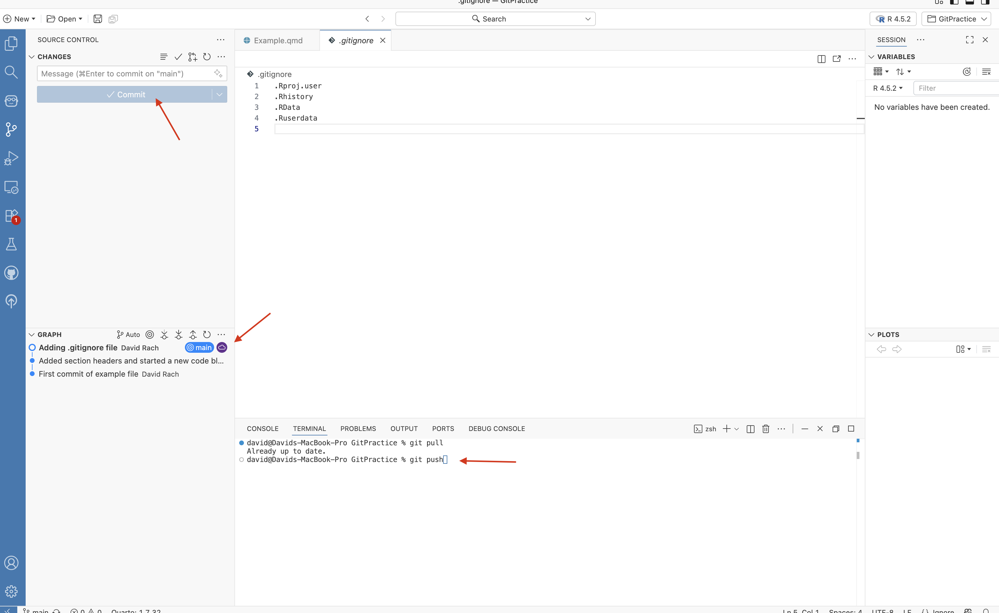
If we switch to our Web browser, we can see that this is also now the case for our GitHub repository that now also has the most recent changes.
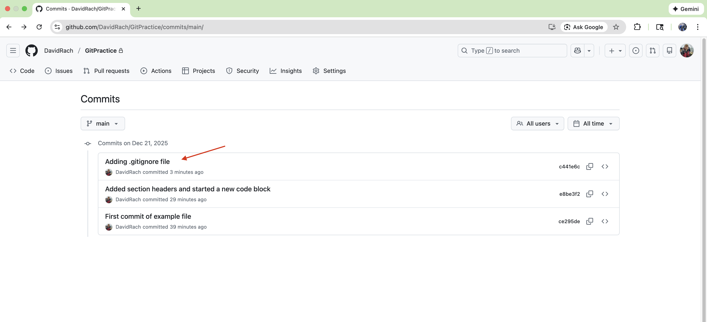
Reverting to Prior Commit
For most daily-workflows, you will only need the git commands that we have introduced above (git add, commit, pull, push). The next two areas (reverting to a prior commit, and branches) are more specialized, and will be covered in greater depth later in the course. We are briefly covering them here. If you are at the point where your last remaining neuron has disconnected, and you feel you need to take a break from version control, feel free to skip to the next section and we will revisit these topics later in the course.
–
In most cases, if your code stops working, you can identify the issue and fix it in the existing version, never needing to resort to reverting to a previous commit (save-state). The times you would need to revert would be if you deleted important files, or the new files are hopeless mess that is not worth trying to sort through. In those cases, reverting back might be better approach.
To imitate a falling back scenario, lets create and additional file, stage and commit it to end up a commit ahead of where we are currently at within the Project Folder.

Now being one (or several) commits ahead, if we wanted to revert back, we would first need to identify the commit we want to revert back to and copy the commit hash number.

Then, opening the terminal, we can enter “git reset” and paste the hash afterwards. We can then press enter.
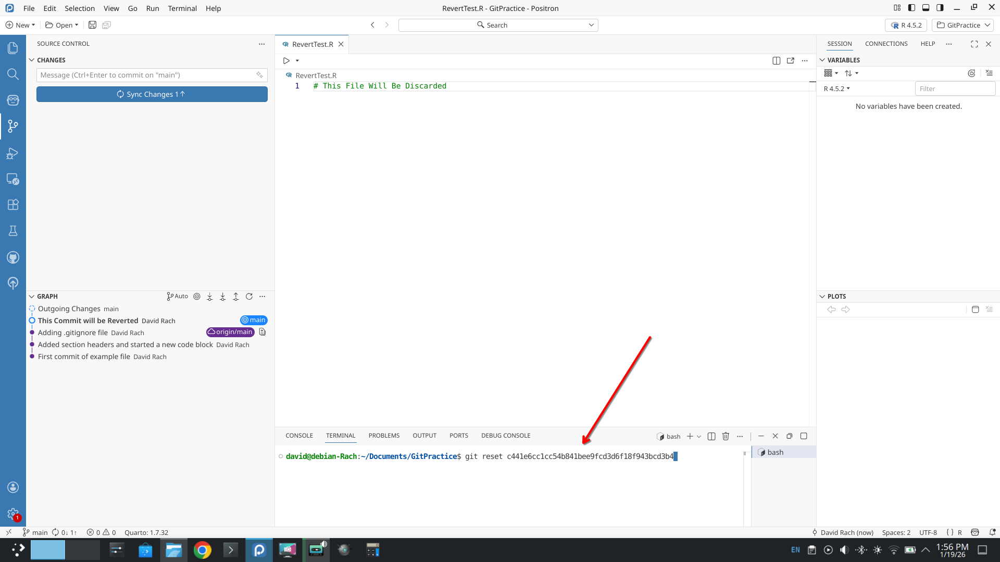
You will notice our additional commit has been removed, although the newer files we were working on subsequent last commit are still present.
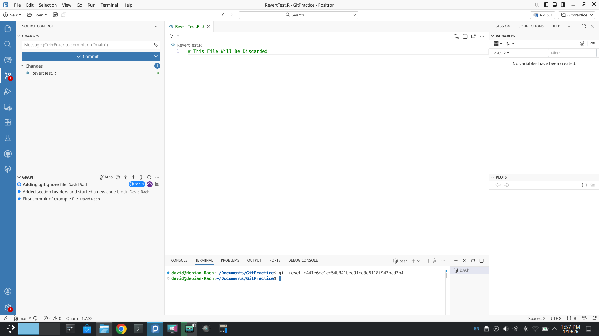
If however, we had wanted to return to the exact same state as the previous commit (removing all subsequent created files), we could do so by adding in the –hard argument. Before starting, save any newer files you want to keep in a completely different folder, because they will be permanently removed.
Then, enter “git reset –hard thecommithashnumber” into the terminal, which would result in a “hard” return to the previous commits save-state. You may need to close and reopen Positron to see the changes reflected.
Branches
Branches are an useful Git feature that we will start using extensively later in the course. Branching allows you to create a parallel/carbon-copy of your existing repository, which you can then edit without affecting the main branch. This is particularly useful for projects that may get messy or drawn out. By isolating these edits to a parallel branch, if they don’t work, your main branch remains safe. Alternatively, if you like the changes that occurred in the branch, you can pull these changes from the branch back to main, bringing the timelines back together.

Within the terminal, entering “git branch” will show the existing branches. In this case, only main is present since we haven’t yet created a new branch.

We can create a new branch in the terminal by entering “git branch” followed by the name of our desired branch. In this case, we are creating a branch called Week1

Now, when we check “git branch” again in the terminal, which returns the two branches, Week1 and main. The * is located next to main, indicating that we are currently within the main branch.
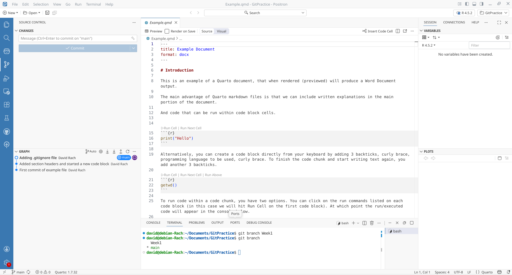
Besides the terminal, we can also create a new branch via Positron. To do so, we first click on the Git tab in the Actions Bar.
Once the left-side bar displays the version control display, we can click on the … button (to the right of changes)to gain access to the Git options drop-down.
From here, we click on Branch, and then select Create Branch.

Using Git branch, we saw that we were still within the main branch. In the terminal, we can switch over to the Week1 branch by using the “git checkout” command, followed by the branch we wish to switch to.

This results in us switching over to the Week1 branch.
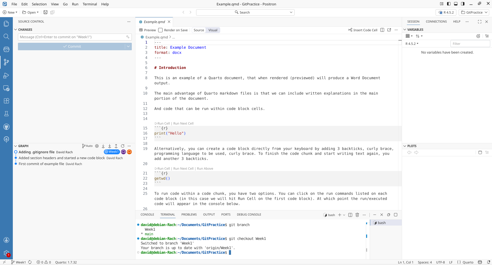
Having switched (ie. checkout) to the Week 1 branch, let’s create the file BranchTest.qmd, which will exist within this branch, but not yet in the main branch.
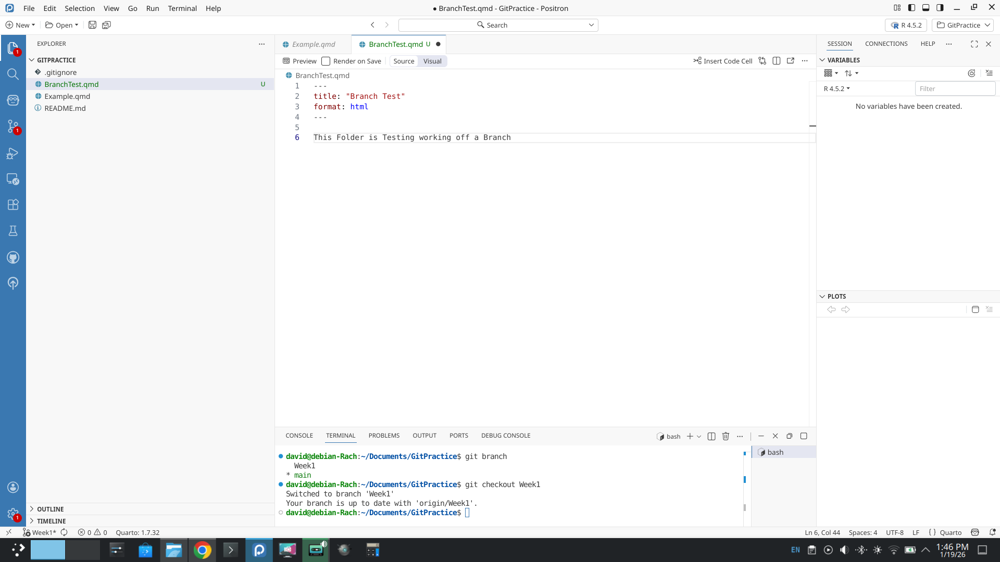
Having created the file, let’s stage and then commit it. This will put the Week1 branch ahead of the main branch by a single commit.
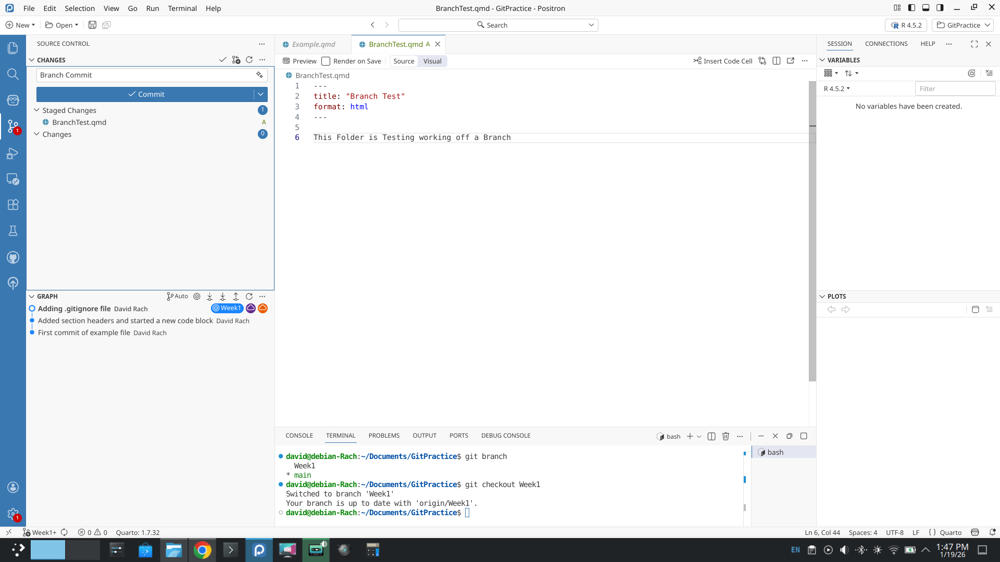
With our changes staged and committed, if we look at the left side-bar’s graph section, our Week1 branch is now ahead of the origin/main branch by one commit.

If we were to check on GitHub, we can see that no new files are present on the main branch, but can see the notification listing recent changes to Week1 branch.

Using the drop-down, we can switch from displaying the main branch to the Week1 branch, where we can see the new file.
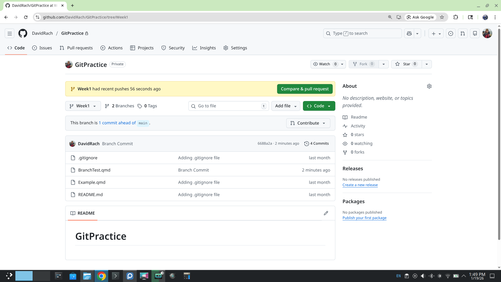
If we click the green compare and pull request button, we end up on this screen. This compares how the two branches are different from each other.
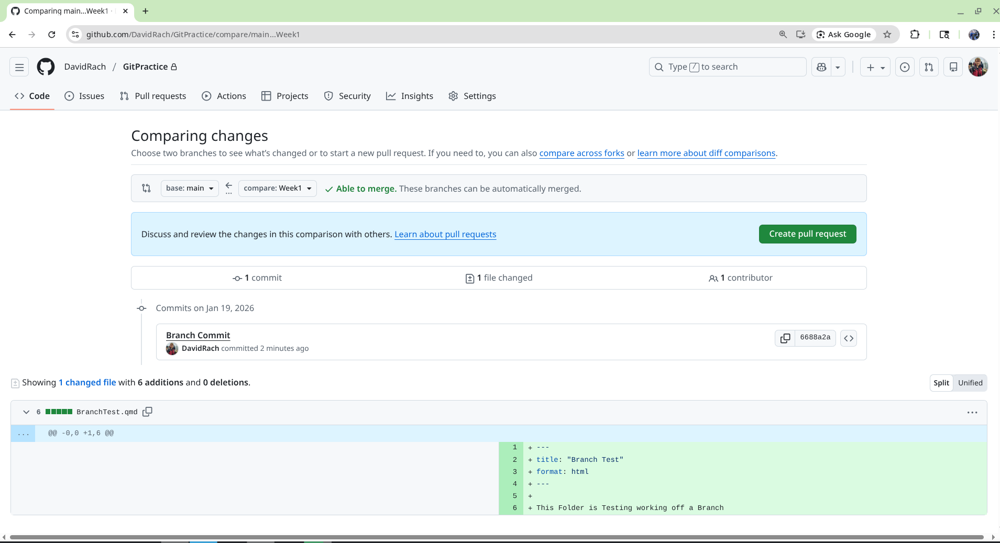
We will delve into branches again at a later point. For now, remember that by creating and prunning parallel branches, you can develop knowing that even if something goes wrong, your main branch remains safe.
Wrap-Up
In this section, we saw how to create a New Project Folder, create files and back up the project folder to GitHub. We also started learning about git, covering the basic commands (git add, commit, pull, push). If you feel a bit overwhelmed, please know, that is normal. Understanding how to leverage git takes time and practice, but is an incredibly valuable skillset to have in the long run.
In the next section, we will look at how by changing various elements within our .qmd file produce a variety of files, and how to leverage code-chunk arguments to fine-tune whether a code-chunk is utilized.
Additional Resources
Git & GitHub Tutorial for Scientist: It’s Not Only for Programmers
Ten Simple Rules for Taking Advantage of Git and GitHub
A brief introduction to Git for beginers